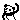

| 2012/05 28 Mon | 150回目*marika |
いつも読んでくださってる方、
初めて読んでくださった方、
コメントしてくださった方、
ありがとうございます。
まりかです
遅刻魔
真洋のブログに私のこと書いてた！
またタレコミが...‼
30、40分遅刻したこと本当です

ほんま自分あほで待ち合わせの時間に
起きてしまったんです。

ホテルやお泊り会では
真洋に、いやメンバーみんなに
お世話になってます。
いつもありがとう

今日はきっちり時間守りました
 ‼しゃきん
‼しゃきん
‼しゃきん
真洋にえらいえらいて
言ってもらった。
そしてね、今日はずっと行きたかった
マッサージにやっと行けた‼
わー

てなってました。
明日すっきりしそうやな。うん
古着屋さん行って服買いました

ワークぽいベージュのオールインワン
買いました。
真洋もかわいいつなぎ買ってた‼
なんか2人ともつなぎすきみたいです。
あとマキシ。
なんでか言うたら楽やから

あと、ネックレス♪
真洋はゾウ
私はキリン

自分でこっぱちなんやす

真洋の肩になんとなくおでこ とんっ
て当てたら
真洋が
「でこぱーんち♪w」
て言ったんです:D
でこぱんち

まりかの新しい技←
では
明日も元気に頑張りまりか

まりか
コメント(113)
2012/05/28 00:00